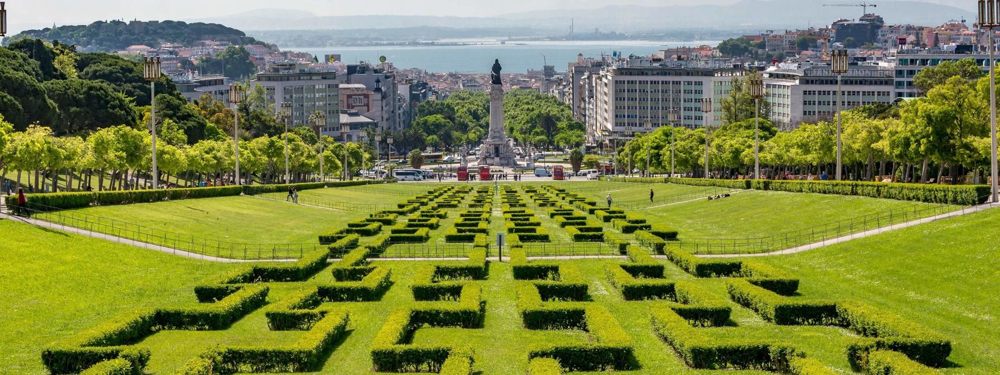

Igreja da Sé
A imponente Igreja da Sé de Lisboa é considerada a catedral mais antiga da cidade, datando do século XII. Localizada no coração do centro histórico,
no bairro de Alfama, ela se destaca pela sua arquitetura românica e gótica, que atravessou diversos períodos e reconstruções ao longo dos séculos
especialmente após terremotos como o de 1755. Além de seu valor religioso, a Sé também guarda um acervo histórico e artístico importante, com destaque
para os claustros medievais e relíquias arqueológicas descobertas no local.
Panteão Nacional
O Panteão Nacional, localizado no bairro de Alfama, é um dos monumentos mais importantes de Lisboa. Originalmente uma igreja, foi consagrado como panteão
em 1916 e abriga os restos mortais de figuras ilustres da história portuguesa, como escritores, políticos e artistas. Sua arquitetura é uma mistura de
estilos, com uma impressionante cúpula e belos azulejos que adornam seu interior. O Panteão é um local de grande significado cultural e histórico, atraindo
visitantes de todo o mundo.

Parque Eduardo VII
O Parque Eduardo VII é o maior espaço verde do centro de Lisboa e um dos mais emblemáticos da capital portuguesa. Situado na parte norte da Avenida da Liberdade,
ele oferece uma vista panorâmica impressionante da cidade e do rio Tejo, sendo um dos pontos mais fotografados pelos visitantes. Com seus jardins geométricos meticulosamente
cuidados, estufas tropicais (Estufa Fria e Estufa Quente), lagos tranquilos, esculturas artísticas e áreas amplas de lazer, o parque é ideal para caminhadas, piqueniques, momentos
de leitura ou simplesmente contemplar a natureza em pleno coração urbano.

Bairro Alto
Impossivel falar da noite Lisboeta sem mencionar o grande Bairro Alto, ele é um dos bairros mais emblemáticos de Lisboa, conhecido por sua vida noturna vibrante e atmosfera boêmia. Com suas ruas de paralelepípedos e fachadas, o Bairro Alto
atrai tanto locais quanto turistas em busca de diversão. Durante o dia, o bairro é tranquilo, mas à noite ganha vida com uma infinidade de bares, restaurantes e casas noturnas. É o lugar
perfeito para experimentar a culinária local, ouvir fado e dançar até o amanhecer.
Carmo Rooftop
O Carmo Rooftop é um dos bares mais icônicos de Lisboa, localizado no topo do Convento do Carmo, no Chiado. Com uma vista deslumbrante sobre a cidade e o Castelo de São Jorge,
este bar oferece uma experiência única para os visitantes. O ambiente é elegante e descontraído, perfeito para desfrutar de um coquetel ou uma taça de vinho e curtindo um bom som.
O Carmo Rooftop é um local popular tanto para turistas quanto para locais, tornando-se um ponto de encontro imperdível na capital portuguesa.
Pink Street
A Pink Street é uma das áreas mais vibrantes e coloridas de Lisboa, localizada no coração do Bairro Alto. Conhecida por suas fachadas rosa e sua atmosfera animada,
esta rua é o lugar perfeito para aproveitar a vida noturna da cidade. Com uma variedade de bares, restaurantes e casas noturnas, a Pink Street atrai tanto locais quanto turistas em busca de diversão.
À noite, a rua ganha vida com música ao vivo, performances e uma multidão animada, tornando-se um ponto de encontro popular para aqueles que desejam experimentar o melhor da vida noturna lisboeta.